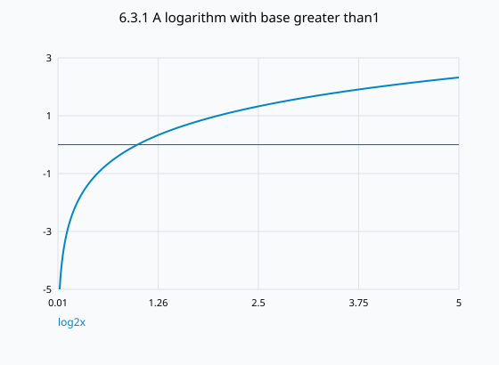

문제 요약
로그함수의(a)정의,(b)정의역,(c)치역,(d)밑b>1인 그래프를 설명하라.

힌트. 정의와 주어진 조건을 식으로 옮겨 단계별로 계산한다.
해설.
\[\log_bx=y\Longleftrightarrow b^y=x,\quad b>0,\ b\ne1\]
\[D=(0,\infty),\quad R=\mathbb R\]
b>1이면 증가하며(1,0)을 지난다.x=0은 수직점근선이고 그래프는 아래로 오목하다.
최종 답. bˣ의 역함수이며 정의역(0,∞),치역ℝ이다. 밑이1보다 크면 증가한다.
검산·주의점. 지수함수의 정의역과 치역을 교환하고(0,1)을(1,0)으로 반사했다.
Problem summary
Explain the logarithmic function’s(a)definition,(b)domain,(c)range,and(d)graph for base b>1.
Hint. Translate the definitions and conditions into equations, then work through them.
Solution.
\[\log_bx=y\Longleftrightarrow b^y=x,\quad b>0,\ b\ne1\]
\[D=(0,\infty),\quad R=\mathbb R\]
For b>1 it increases through(1,0),has vertical asymptote x=0,and is concave down.
Final answer. It is the inverse of bˣ,with domain(0,∞),rangeℝ,and increasing graph when the base exceeds1.
Check and conditions. Exchanged the exponential domain/range and reflected(0,1) to(1,0).